все коллекции
ON THE WAY TO WOODSTOCK
Наша новая коллекция, посвященная культовому музыкальному фестивалю «Вудсток» 1969 года. В основу коллекции легли мирные символы из культуры 60-х: пацифик, голубь, ромашка, сердце и другие.
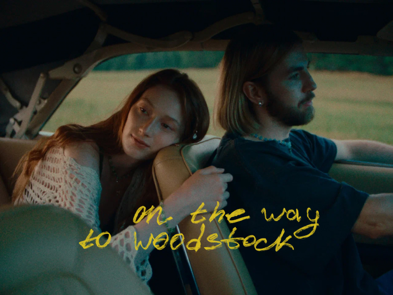
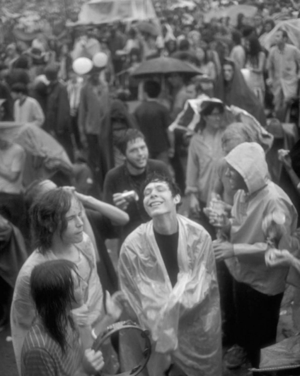
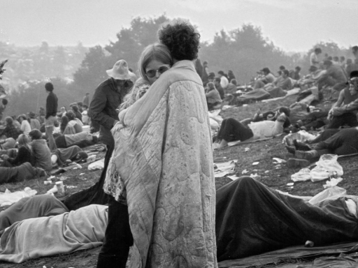
Фестиваль, проходивший с 15 по 17 августа 1969 года и разделивший жизни всех сопричастных на «до» и «после», стал символом разума и человечности, взаимопомощи и
любви, а участники всего за 3 дня стали настоящей семьей. Вся эта история оказалась очень близка нашей команде: мы обожаем музыку того времени, стиль и идеологию
контркультурных 60-х .
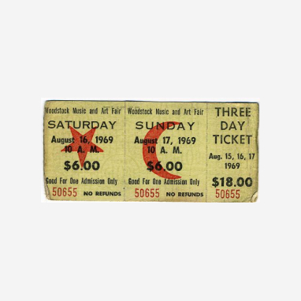
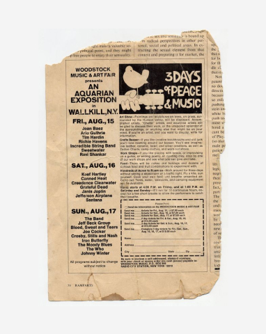
«Вудсток» — три дня любви, мира и музыки
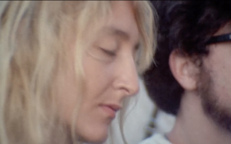
А семейный, почти племенной дух, наполняющий «Вудсток», подарил нам ощущение приключения, в которое мы отправляемся вместе — будто проводя мостик между
фестивальной хроникой и настоящим.
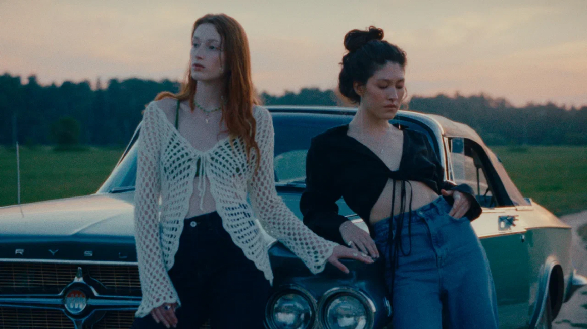
«Все, что могло пойти не так, пошло не так. Если подумать, все это могло закончиться полной катастрофой»
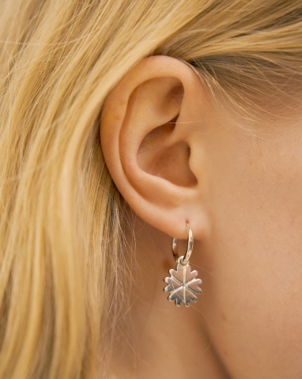
Ощущения от просмотра вдохновили нас на создание кампейна-роудтрипа, который стал одновременно теплой одой уходящему лету и метафорой стремления к сокровенному.
В нем есть музыка, звучащая из кассетного плеера, шум мотора, мягкий летний ветер в открытом окне, зелёные поля в зеркале заднего вида и приятное ожидание чего-то хорошего.
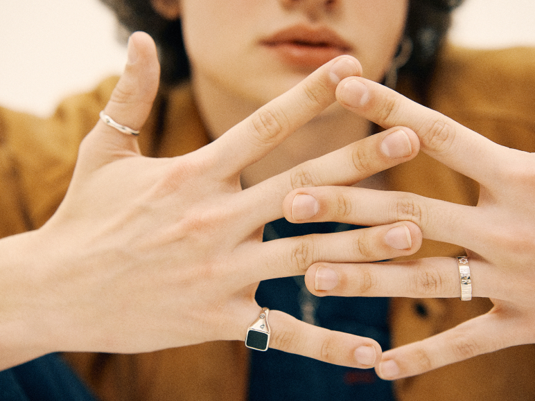
«Оказалось, что 400 тысяч человек могут сосуществовать мирно, без насилия. И нам казалось, что если бы мы смогли принести в общество это чувство любви и
единения, мы бы изменили мир».
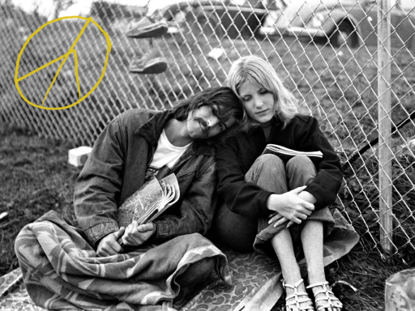
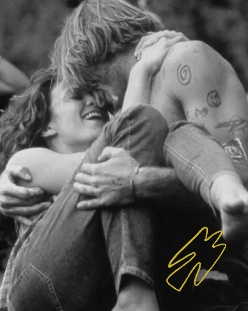
В основу коллекции также легли символы, которые были неотъемлемой частью атрибутики контркультуры шестидесятых. Пацифик, голубь, ромашка, сердце — яркие и
выделяющиеся, они наносились буквально на любую доступную поверхность. Символами разрисовывали фургоны-фольцвагены, одежду, делали татуировки.
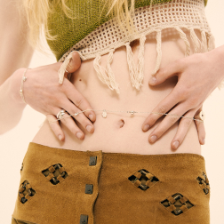
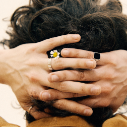
Так, где бы ты ни был, всегда можно было выловить в толпе своего единомышленника и знать — мы вместе и за одно доброе дело. Поэтому эта коллекция не только о
музыке и культовом мировом событии, она — о большом мирном высказывании, звучащем как песня, которую все знают наизусть.
Смотреть все изделия
другие коллекции

Нашаистория началась с большой любви к натуральным камням, а украшения с ними всегда были неотъемлемой частью бренда.

Наша новая коллекция, посвященная культовому музыкальному фестивалю «Вудсток» 1969 года.